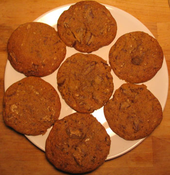

Chocolate chip cookies to die for
I did it! Thanks to Luisa, I tried Debbie’s recipe for The Best Homemade Chocolate Chip Cookies in the Entire World. Debbie isn’t kidding—these are the cookies I’ve been after. Sweet but salty, chewy five minutes out of the oven and all the way to the edges. In a word, perfect. The key seems to be refrigerating the dough for an hour before baking. The resulting hard dough was daunting, but I used my fingers and formed little balls on the parchment paper, and I ended up with nine perfect cookies (I halved her recipe since I only have one cookie sheet, and I ended up with nine, which is more than enough for the two of us.

For chocolate, I used a 4-ounce bar of Ghiradelli semisweet baking chocolate, $2.99 at d’Ag. I prefer having bigger chunks mixed with little shreds to having uniformly sized chips, but either way would be fine. I also mixed by hand (ok, n8 did that. He said “Who needs a KitchenAid when you have a NathanAid?”), but I just ordered the nine-speed mixer from amazon, which they have for $60, and which has an average rating of five stars. I hope that will inspire me to bake one thing a week, which is sort of a New Years resolution of mine.
Comments
Chocolate chip cookies are my weakness. Thank you for posting … now I have another recipe to try … bliss!
Mommy knows best—I do want to try this recipe but I believe I did mention refrigerating the dough…If you ever get another cookie sheet and want to make larger batches you might want to invest in a cookie scoop (small ice cream scoop); it makes shaping the cookies go a lot faster. Also in lieu of a second sheet, using parchment paper, slide the paper, with cookies, onto the cooling rack, place fresh parchment onto the cookie sheet, and you’re good to go with a second batch of cookies in the oven. Some would say the pan needs to cool down but I haven’t found it makes a significant difference.
You can also roll a stiff dough into a log, wrap in wax paper, and keep in fridge, slicing and baking as needed. Voila! Homemade slice and bake cookies!
Yay! So glad you liked them. Did you see the choc chip cookie recipes in Sunday’s NY Times Magazine from Amanda Hesser?
Yes and I intend to try one or two of them this weekend!
Add a comment